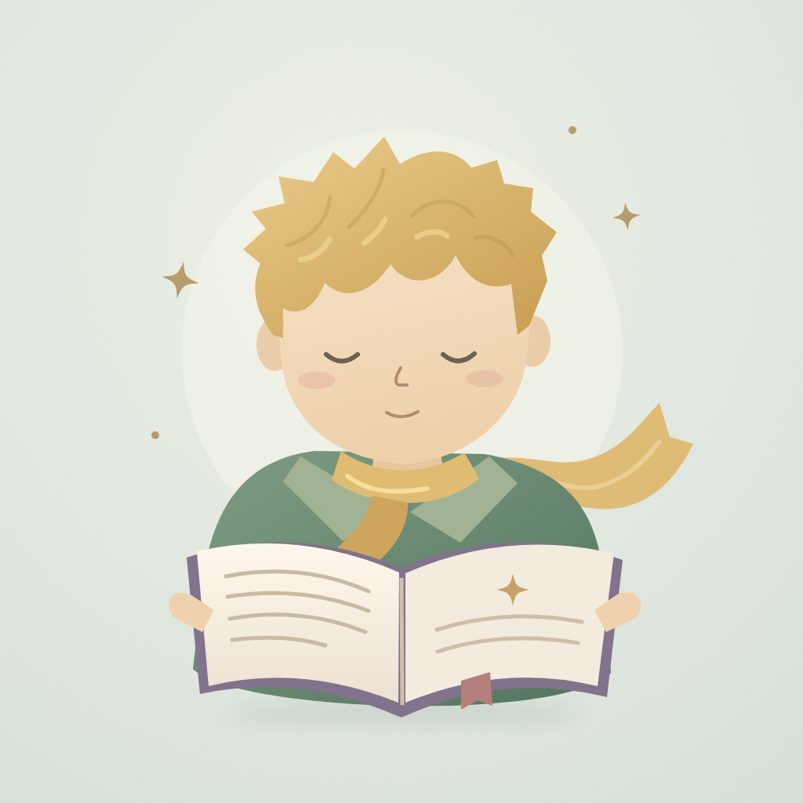
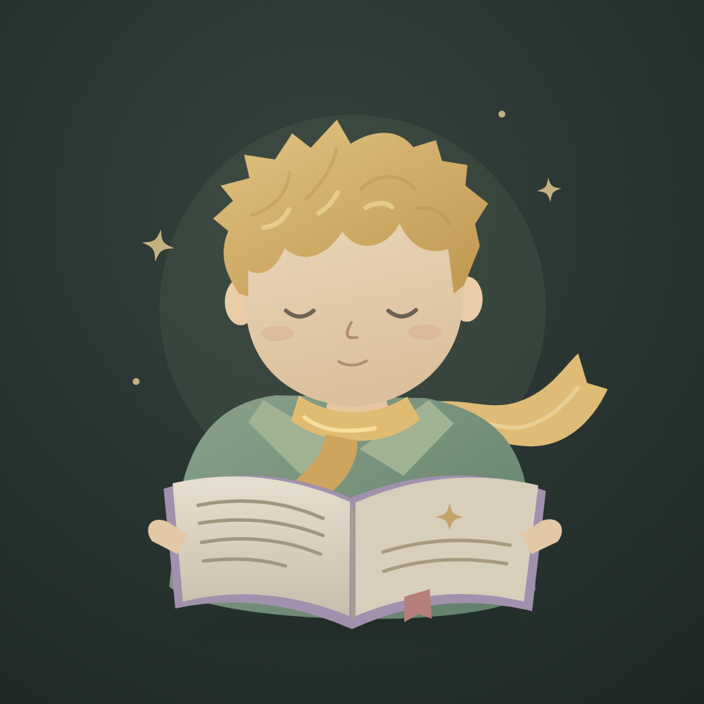
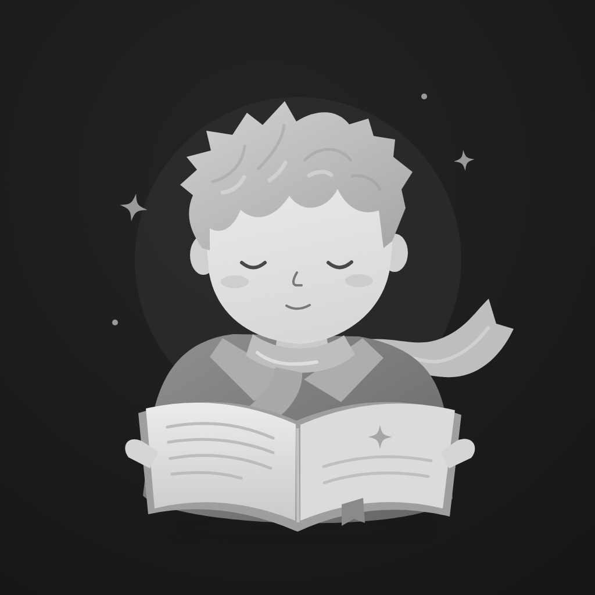

DEFAULT / 默认

柔和鼠尾草绿
就是你选中的那一款。
人物、构图与原始配色均保留。
听页
听页阅读与听书
TINGYE / SELECTED · 02
保留你选定的 02：金发、长围巾、低头读书的少年。
默认图与选型预览完全一致，补齐夜间与系统着色资源。
DEFAULT / 默认

就是你选中的那一款。
人物、构图与原始配色均保留。
DARK / 夜间

压暗背景与书页，保留温暖的金发。
不改变人物比例、姿势与表情。
TINTED / 着色基础

这里展示的是灰阶基础资源。
最终颜色由 iOS 的桌面选色决定。